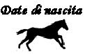

Si rinnova il duello fra i cavalli del Palio di luglio, il posto di Benito è preso dal rientrante Pytheos che fa sognare il Drago.
Aceto è per la seconda volta nella Torre e ritrova Uberto, sensibilmente migliorato rispetto all'agosto 1990.
L'altro protagonista di luglio, il mezzosangue Galleggiante tocca al Bruco, l'infortunio di Massimino, alla seconda prova, fa cadere la scelta su Bastiano. Considerato che l'Istrice ha avuto in sorte il promettente Zucchero, le tre Contrade che non vincono da più tempo sono le favorite d'obbligo di questa Carriera.
Dopo una mossa annullata il nervosismo fra i canapi è notevole, ma quando Cianchino entra l'allineamento è praticamente perfetto. Trecciolino è abile a portare in testa la modesta Bambina, ma a San Martino si forma già il terzetto che si contende il Palio fino all'ultimo, Istrice, Drago e Torre.
I sogni del Bruco svaniscono con la caduta di Bastiano a San Martino, al Casato cadono Lupa e Onda.
In testa continua un'accanita lotta, Zucchero sembra in grado di vincere, Drago e Torre inseguono, poco più dietro si spegne la rimonta della Pantera, con Cianchino che batte nel colonnino a San Martino.
Il terzo giro è da brividi, Il Pesse non molla, sceglie una traiettoria esterna e infila l'Istrice, sfruttando la maggior potenza di Pytheos, Bonito si ritrova a inseguire, insieme ad Aceto.
All'ultimo San Martino i due inseguitori si ostacolano a vicenda, la Torre passa seconda
ma è troppo tardi, il Drago ha già vinto.
Pytheos si impone per la terza volta di fila nel Palio dell'Assunta, ancora interpretato alla grande dal suo allenatore e proprietario Giuseppe Pes detto "Il Pesse".
(Da "Daccelo!" di Roberto Filiani)





|